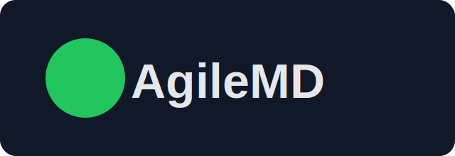
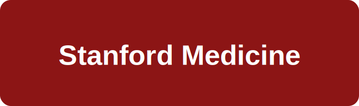

I wanted to be a builder before I knew what that meant.

Stanford. Biomechanical engineering. ME101 taught me to build in the physical world.
An orthopedic mentor introduced me to the OR. I fell in love with healing people.
UCLA medicine, then a startup year at AgileMD. Early, but formative.

Back to training at Stanford in internal medicine and anesthesiology.

Seven years into attending practice at El Camino Health and Mills-Peninsula, still pulled by that same builder instinct.
Then Claude removed my technical ceiling.
I overhauled internal scheduling workflow and built tools like VAPOR Chart for anesthesiologists.
I want to build what gives clinicians time back.